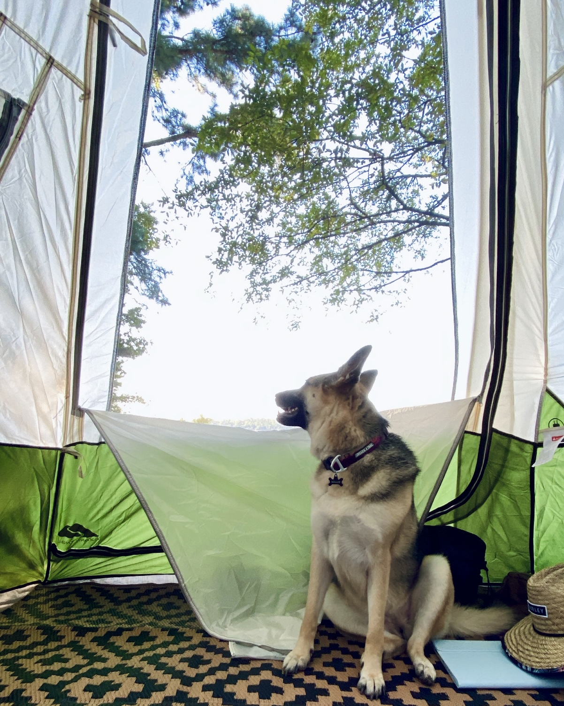
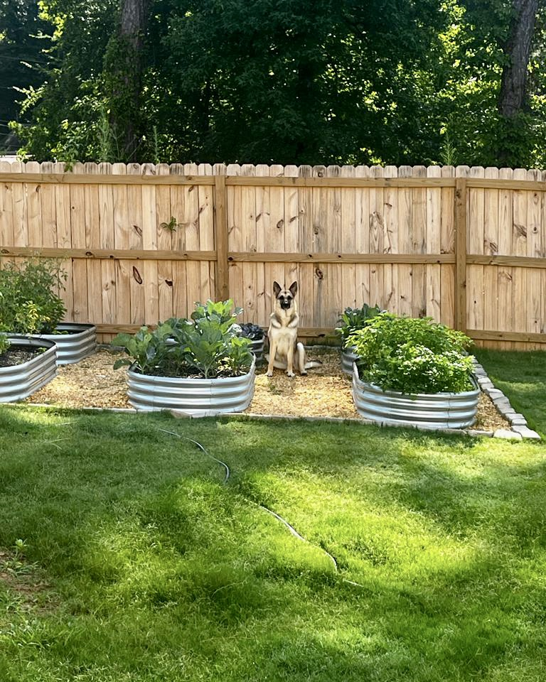
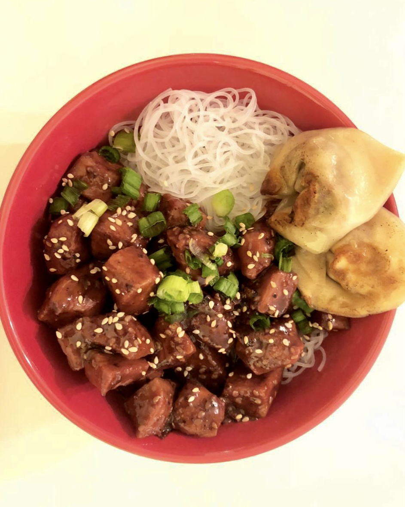

"If I want it, it is already mine."

Hiking with my dog, Millie. Millie is my three year-old German Shepherd and the best hiking companion. Together we have completed many hikes in the Atlanta area like Arabia Mountain, Sweetwater Creek, Cloudland Canyon, and more.
Working in my garden. I started a vegetable garden at the beginning of 2023 and have plans to start a englsih cottage flower garden at the beginning of 2024.
Cooking for friends and family. I love throwing dinner parties regularly, finding any excuse to spend time with friends and try new recipes.
